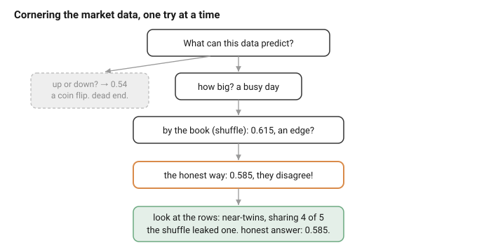
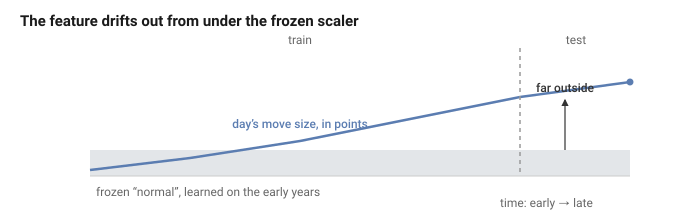
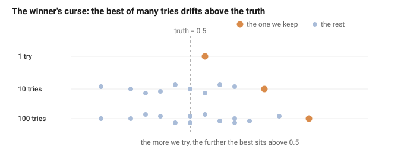
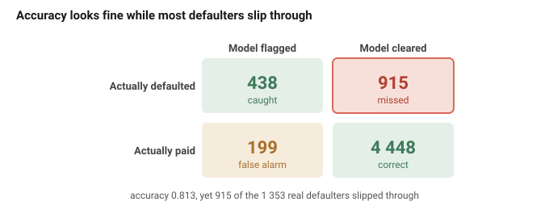
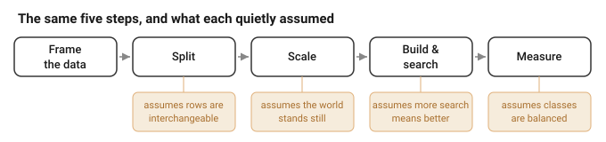

Working draft, written as a journey rather than a proof: we start from the ordinary, by-the-book way of judging a model by its number, and follow honestly where it leads. Reasoning first; the code behind every number is in the appendices. Compass in NORTH_STAR.md; the underlying argument in KEY_CORE.html.
Constraint (handbook): final submission ≤ 50 pages, including bibliography, tables and figures, excluding appendices.
We have a model. Is it any good? How would we even know?
We do the obvious thing. We hide some data from it, let it guess on that data, and count the hits. That gives us a number. Is it high? Good. Low? Not good. So we read the number and we decide.
But we never build just one. We build many and keep the best number. So what are we really trusting in the end? One number.
And here is the question we almost never stop to ask: can we trust it?
Let us find out honestly. We will not bend anything to force a problem into view. We will do the opposite, and follow every rule the books give us, exactly. Then we stand back and ask, together, what that honest number is really worth.
(One limit, so we are not doing everything at once. We stay with deep learning that forecasts and classifies: is tomorrow a busy day on the market, did this borrower default, which activity is this. Not vision, not language, not the rest. Just putting a label on the next case.)
So, where does everyone start? By the book. Let us start there too.
So we have a job: take the next case and put a label on it. What do we build?
Almost always, the same thing: a small neural network. Why that? Because it bends to fit almost anything. It is a stack of simple parts, and we get to decide how many and how big.
That is the whole model. A few features go in on the left, pass through a hidden layer in the middle, and come out on the right as a guess between the classes. The circles and wires are fixed once we choose them; what we actually set are the knobs listed underneath: how wide, how deep, which activation, how fast it learns, how long, how hard we hold it back. Turn any knob and we get a different model. That freedom is the whole appeal. Later it will also be the trouble.
But the model is only the middle of the story. To get a number we can show anyone, we follow a recipe, the same one taught in every course:

Five steps, start to finish. Frame the data, so we know what one row is and what we are predicting. Split it into training, validation and test. Scale the features. Build and search for a good model. Measure how good it turned out. Do all five by the book, and the number at the end is meant to be honest.
And it looks airtight. Every step is standard, careful, exactly what we are told to do. So here is the plan for the whole report. We will walk this recipe, one step at a time, on real data, and at each step we stop and ask one plain question: is this step really as safe as it looks?
Let us start at the first real choice. The split.
Step two of the recipe: cut the data into a training set, a validation set, and a test set. And before we cut, shuffle it, so each part looks like the whole. This is the standard move, taught everywhere (Stone, 1974; Kohavi, 1995). Nobody argues with it.
Let us try it on something real. Our first dataset is thirty thousand credit-card clients, and the job is to spot who will miss their next payment. One row is one person:
| client | age | credit limit | latest bill | latest payment | defaulted? |
|---|---|---|---|---|---|
| 1 | 24 | 20 000 | 3 913 | 0 | yes |
| 2 | 26 | 120 000 | 2 682 | 0 | yes |
| 3 | 34 | 90 000 | 29 239 | 1 518 | no |
Twenty-three numbers about a person, and a yes or no at the end. About one in five defaults.
Does it matter how we split them? It should not. One client tells us nothing about the next, so any fair way of dealing the cards ought to give the same answer. But we said we would check, not assume. So we cut the data eleven different ways, hold everything else fixed, and watch the number. Ten are ordinary random shuffles. The eleventh forces that one-in-five default rate onto both sides.
| how we split | test accuracy |
|---|---|
| ten random shuffles | 0.813 ± 0.003 |
| forced-ratio split | 0.814 |
Every one of them lands in the same place, within a whisker. The split simply did not matter. On this data the book is exactly right: shuffle, cut, and go.
One step down, one dataset, and the recipe passed clean. So we try the next.
The market.
Same step, new data, and this time the data barely looks like data: one long column of numbers, the daily closing price of the S&P 500, about six and a half thousand days in a row.
| day | close |
|---|---|
| 1 | 1 455 |
| 2 | 1 399 |
| 3 | 1 402 |
| 4 | 1 403 |
| 5 | 1 441 |
So what can we even predict from a column of prices? The obvious first try is direction: will tomorrow close up or down? We build it, split it by the book, and look. It scores 0.53, no better than betting "up" on every single day. No edge at all. Dead end.
But a market carries more than direction. It has a mood: some stretches are calm, some are stormy, and the storms seem to bunch together, a wild day sitting near other wild days. So we change the question. Never mind which way tomorrow moves; can we say how much? From the sizes of the last five days' moves, we predict whether tomorrow is a busy day, its move bigger than usual.
| row | last five move sizes | busy tomorrow? |
|---|---|---|
| X[0] | 0.038 0.002 0.001 0.027 0.011 | yes |
| X[1] | 0.002 0.001 0.027 0.011 0.013 | no |
| X[2] | 0.001 0.027 0.011 0.013 0.004 | yes |
We split it by the book, shuffle and cut, and this time it reads 0.615. That is a real edge, well clear of the coin's 0.5. On the market, an edge like that would be worth a fortune, which is exactly why we should not believe it yet. Edges on the market are not supposed to be this easy.
So instead of celebrating, we ask one plain question: is 0.615 what we would actually get in practice? In real life we would train on the days we have and predict days that have not happened. So we measure it that way too, train on the first 80% in date order, test on the newest 20%, everything else untouched.
| how we split | test accuracy |
|---|---|
| shuffle | 0.615 |
| past, then future | 0.585 |
They do not match. And that stopped us, because it should not happen. Back on the loan clients, eleven different ways of cutting the data agreed to the third decimal. Here, two cuts of the same days, the same model, disagree by three whole points. One of the numbers is lying, and at that moment we did not know which one, or why.
So we finally did the thing we should have done first: we stopped fiddling with the model and looked at the data, the rows themselves, side by side. And there it was, in plain sight the whole time. Each row is the last five days; the very next row is those same days slid along by one. Two neighbouring rows share four of their five numbers. They are near-twins. We had been so busy with the model that we never once looked at what a single row actually was.
That one look explains both numbers. When we shuffle, a day and its near-twin can fall on opposite sides of the cut, so at test time the model is handed a day whose near-double it already studied in training. Its 0.615 was never skill at seeing the future; it was skill at recognising a neighbour. The honest split, past then future, leaves it no twin to lean on, and that is why it settles at 0.585 (roll that cut forward through the years and it hovers near 0.60, drifting a little as the market itself changes, but it never climbs back to 0.615).
One doubt still nagged: how do we know the gap is a real leak, and not just the shuffle getting lucky once? The direction task from the very start gives us the answer. A leak can only inflate an edge that is really there, so on the direction target, which we already know is a coin flip, the gap should vanish. It does: shuffle and honest split both land near 0.53, that same base rate. The gap shows up only where there is a real pattern to steal. That is how we know it is a true leak.

Look back at the trail. We did not reason our way to "respect the order of time." We tried the obvious thing and hit a wall, tried another and got a number too good to trust, checked it and got a contradiction, and only then looked at the data and found the answer sitting there. The lesson is not really about time series. It is that we had spent all our care on the model and none on the data, and the data was exactly where the trap was hiding.
The phone.
One more dataset, and this one has nothing to do with time. Thirty people wore a phone while they walked, sat, stood, and so on, and each short moment of motion becomes a row of 561 numbers, with a label for what they were doing. Here are the first three rows:
| row | person | activity | f1 | f2 | f3 |
|---|---|---|---|---|---|
| 1 | 1 | standing | 0.29 | -0.02 | -0.13 |
| 2 | 1 | standing | 0.28 | -0.02 | -0.12 |
| 3 | 1 | standing | 0.28 | -0.02 | -0.11 |
Notice, again, before we do anything: all three rows are the same person, standing, and their numbers barely move. That is how the data comes, in long runs of one person doing one thing, hundreds of rows at a stretch. Thirty people, but thousands of rows.
By the book: shuffle all the rows, take a random fifth as test. It reads 0.973, almost perfect, the best number we have seen yet.
But we have been here before, so we ask how the model would really be used: on someone new, a person it has never met. Shuffle does not test that at all, because once everyone's rows are scattered, almost every person sits on both sides of the cut. So the honest split holds out whole people: pick six of the thirty, put every one of their rows in the test set, and let the model meet them for the first time there.
| how we split | test accuracy |
|---|---|
| shuffle rows | 0.973 |
| hold out people | 0.946 |
Down it comes again, lower in almost every run. Part of that shiny 0.973 was never reading activities at all; it was the model recognising these particular thirty people. Shuffle let it study a person in training, then meet them again at test. Ask it about a stranger, the thing we actually wanted, and it honestly does worse.
What the split step really asks.
Three datasets, one step, and they fall into two camps. On the loan clients the split did nothing. On the market and the phone it moved the number by about three points, always the same way: the shuffle read higher than the honest cut.
So the trouble was never shuffling itself. Shuffling was exactly right for the loan clients and quietly wrong for the other two, and the recipe cannot tell them apart, because the difference is not in the recipe. It is in the data. Loan's rows are separate people; the market's rows are days in a row; the phone's rows belong to someone. Shuffling silently assumes any row could swap with any other, and only sometimes is that true.
And notice that the loan data earned its place. It held. If every example had broken, you could accuse us of hunting for trouble. But one of the three stood perfectly still, for a plain reason, its rows really are independent, and that is how we know the failure comes from the shape of the data, not from a rigged demonstration.
Which is why there is no single split that is safe everywhere. Days in order want a cut in time. Rows that belong to people want whole people held out. Rows that are truly independent want the plain shuffle the book teaches. The work was never to find a clever trick; it was to look at the data first and see which situation we are in.
That is step two of the recipe, done with our eyes open. On to step three: scaling.
Step three: scale the features. They come on wildly different sizes, so we standardise them, subtract the average, divide by the spread, so each one sits near zero. The book is careful here, in exactly the way we learned to be: measure the average and the spread on the training data only, freeze them, and apply those frozen numbers to the test. Never peek at the test. We have done this all along.
Let us stay on the market and change one small, innocent thing. Our feature was the size of each day's move, in percent. Suppose we measure it in points instead, the raw change in the index, which is what you get by subtracting two prices and forgetting to divide. Same days, same information, a different unit. Everything else stays fixed, and the split stays honest.
| feature | test accuracy |
|---|---|
| size in percent | 0.585 |
| size in points | 0.512 |
Read the second row twice. The same honest split, nothing leaked, the scaler frozen exactly as taught, and the model that scored 0.585 now scores 0.512, a coin. By changing one feature from percent to points, we appear to have killed it. A careful person who did everything by the book would read that 0.512, decide the market has no signal, and walk away. But we know better, because we watched the percent version work a moment ago.
What happened? No leak this time. Look at how the two units behave over the years. A one-percent day is a one-percent day whether the index sits at 1 500 or at 7 000. In points it is not: the index climbs from about 1 455 to 7 483 across the data, so the same one-percent day is worth about 15 points early on and 75 points near the end. The percent feature holds still. The points feature drifts upward (statisticians call this drift, or covariate shift: Shimodaira, 2000; Gama et al., 2014).

Now the frozen scaler is the trap. It learned what "normal" looks like from the early, low years, then applied that to the late, high years. For percent that is fine, the early years describe the late ones. For points it is a disaster: the test days sit far outside anything the model met in training, and it has no idea what to make of them. The number is not lying. It is truthfully reporting a model the recipe broke.
Can we fix it? Mostly. Instead of freezing one average for all time, scale each day by its own recent past, a window that slides forward and only ever looks backward, so nothing leaks. That lifts 0.512 back to 0.549. Better, but still short of the 0.585 the percent feature reached. The honest lesson is quieter: the real fix was never to build a drifting feature at all. Divide by the price, keep it in percent, and the drift is gone before any scaler meets it.
And see how this failure mirrors the last one. A bad split made the number too high, an edge that was never there. A bad scale made it too low, an edge that was there and got destroyed. The same disease, opposite symptoms: one recipe, meeting data it does not fit.
That is step three. Next comes the heart of the machine: building the model, and searching for a good one.
Step four is where the model actually gets built, and it is the busiest step by far. Look back at the network: how wide, how deep, which activation, how fast it learns, how long, how much we hold it back. Every one of those is a knob, and nobody sets them right the first time. So we do the natural thing. We try a setting, train, look at the score, try another, and keep the best one we find.
Nobody would call that cheating. It is just being thorough. The harder we search, the better the model we walk away with, so of course we search. And the more settings we try, the higher the best score climbs.
But wait. When the best score climbs after we try more, two very different things could be going on. Maybe the search is turning up better models. Or maybe we are just keeping the luckiest of a lot of noisy scores, and from the outside luck looks exactly like getting better. On real data we cannot tell them apart, because we never know the true skill to hold the number against.
So let us build a case where we do know. We make a dataset out of pure noise: random numbers for features, and a label that is a coin flip, decided without ever looking at the features. There is nothing in it to learn, and because we built it that way, we know the exact truth: no model can beat 0.5. Any score above 0.5 is luck, and nothing else.
Now we search this noise the way we always search. Draw a setting at random, train it, score it on a small validation set, and keep the best. Then do it again with more settings, and more again, and watch what the best score does.

One setting scores near 0.5, but never exactly, it wobbles a little by luck. Try ten and keep the best, and the best of ten sits a bit above 0.5. Try a hundred and keep the best of those, and it sits higher still. Nothing was learned, nothing improved; we just reached further into the lucky tail each time. Put numbers on it, opening a large sealed test on each winner to read its real value:
| settings tried | best score we keep | the truth |
|---|---|---|
| 1 | 0.510 | 0.500 |
| 10 | 0.553 | 0.500 |
| 100 | 0.577 | 0.500 |
The score we keep climbs from 0.51 to 0.58 as we try more. The truth never moves off 0.50, not once. Every point above 0.5 was luck, picked out by keeping the best of many tries. (Exactly how fast that best drifts is plain first-year probability, worked out in Appendix A.)
And this is not a quirk of noise. It is what searching does to any score. On real data the truth is not 0.5, but the same thing happens: the harder we search, the further our reported number floats above the model's real skill. That gap is not bad luck. It is a measure of how hard we looked.
The machine snoops by itself.
Searching by hand, one setting at a time, is bad enough. But a deep network does the same thing automatically, and hides most of it from us.
Take early stopping, the normal, sensible habit: we train for many epochs and keep the one where the validation score looked best. That is one peek at the validation set per epoch, and we keep the luckiest. Or take the random seed: the very same setting, started differently, gives a different score, so we run a few seeds and keep the best of those too. None of this feels like searching. All of it is.
So count honestly. We say we tried five settings. But inside each we kept the best of a few seeds, and inside each of those the best of many epochs. Five settings quietly become a hundred and fifty tries, and the number we report is the best of a hundred and fifty, not of five. The tool we reached for at the very start, so flexible, so powerful, turns out to be a machine for driving that one validation score as high as it will go. It is a machine for doing exactly what we just watched inflate a number out of pure noise. There is an old name for it: data snooping. A deep network snoops for a living, and never tells us how many times it looked.
There is no clever fix, only discipline. Search less, and search in the open, not with a hundred hidden seeds and epochs. And keep one sealed test that you open exactly once, on the single model you already chose, never as a dial you turn until you like the number, because a test you select on lies just like anything else you select on.
That is the fourth step, and the one that does the most quiet damage. One step of the recipe left: reading off how good the model really is.
The last step: read off how good the model is. The book says report accuracy, the fraction of cases you get right. Simple, and we have done it all along.
Let us do it once more, on the loan clients, the one dataset that behaved. Honest split, scaler frozen on the training side, look once. The model reads 0.813. A fifth of clients default, so stamping "no default" on everyone would already score 0.779; our model beats that, a little. We would write 0.813 down and move on.
But stop and ask what the model actually does, because the whole point of it was to catch defaulters. Of the clients who really did default, how many did it catch?

There it is. Out of 1 353 real defaulters, the model caught 438 and missed 915. It let two in three of them walk straight through, stamped safe. Its 0.813 is almost entirely that big green box, the paying clients it correctly cleared. On the people we actually built the model to find, it is close to a coin.
And here is the part that stings. A model that catches nobody, that stamps "will pay" on all thirty thousand, scores 0.779. Ours catches a third of the defaulters and scores 0.813. Three points apart on paper, worlds apart in the job. Accuracy cannot tell a working model from one that does nothing, because it counts the easy majority and lets the rare, important cases vanish inside it.
Nothing leaked here, and nothing drifted. The split was honest, the scaler was clean, the number was measured perfectly. It is exactly right, and it answers the wrong question. The fix is to report a number that weighs both kinds of client equally, balanced accuracy, which scores the defaulters and the payers on their own and averages the two. Ours is 0.633, not 0.813. Far less flattering, and far more honest. Or skip the single number and just read the boxes above; nothing can hide in a confusion table.
That is the last step of the recipe. We have now walked all five, by the book, with care, and watched four of them quietly betray us. It is time to ask what on earth is left to trust.
Let us count what just happened. We took the standard recipe, the one every course teaches, and we followed it to the letter, five careful steps. Four of the five turned on us. The split made the number too high. The scaler made it too low. The search inflated it out of thin air. The metric measured the wrong thing entirely. Every safeguard we trusted failed somewhere, and not one of them said so out loud. We were not careless. We did everything by the book, and the number lied anyway.
So the number, the score we set out to chase and report and believe, cannot carry our trust. Not because we were sloppy, but because searching inflates it and a hidden assumption can quietly rot it, and from the outside a rotten number looks exactly like a good one. If we cannot trust the number, and we have run clean out of numbers to trust, then trust has to live somewhere else. Where?
Here is the answer, and it was hiding in plain sight the whole time. Look back at the honest fix at each step. Not one of them was a secret technique. The careful practitioner who got fooled and the honest one who did not use the very same five steps: both shuffle, both scale, both search, both measure. The only difference between them, the whole difference, is understanding.

One person reached for shuffle because the book said shuffle. The other looked at the data first, saw that its rows came in time order, and chose a cut that respected time. Same step, opposite result, because one of them understood what the data was before deciding what to do to it. That is the lesson of every station we walked. The trap was never in the step. It was in doing the step without asking what it quietly assumed, the four tags above, and whether the data in front of us could bear it.
So we do not trust the number, and we do not even trust the recipe on its own, because a recipe followed blindly is exactly what broke on us four times over. What we trust is understanding, made solid and repeatable in the shape of a procedure. State each assumption and check it against the data. Match the method to the structure in front of you. Search less, and look once. Do that, and the number at the end is one you have earned the right to believe, not because it is high, but because you can trace, step by honest step, why the way you made it could not have lied.
That is the whole of it. The recipe is a fine place to start and a dangerous place to stop. We cannot trust the goal. We can trust the understanding that earns it.